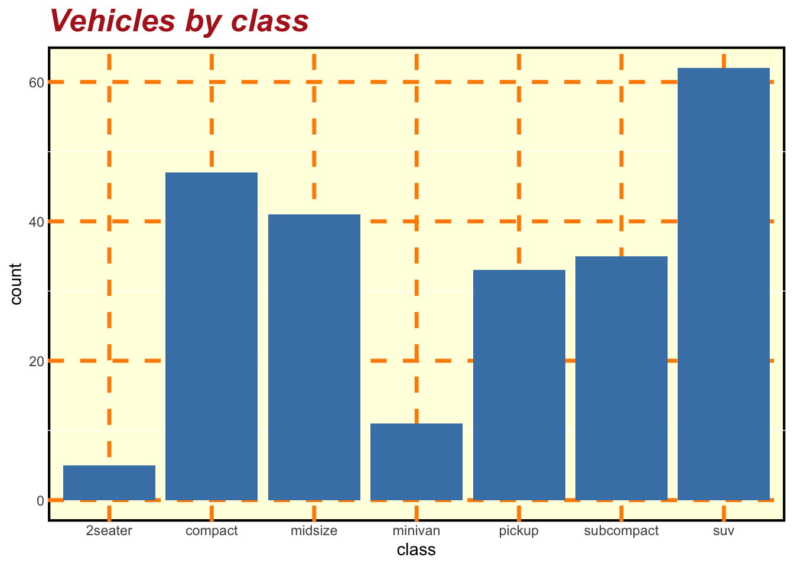
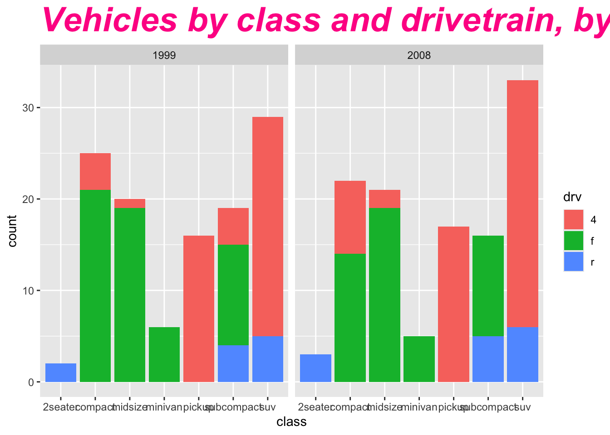
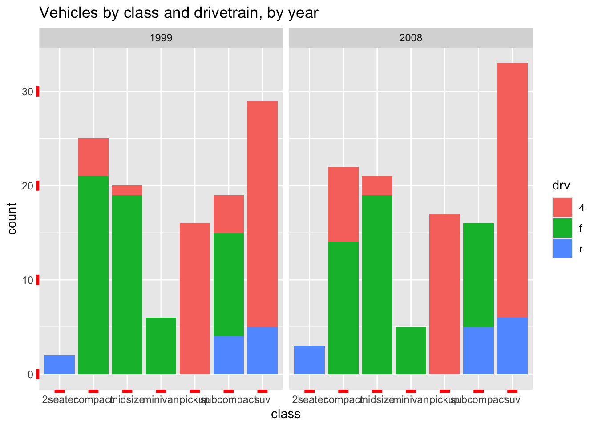
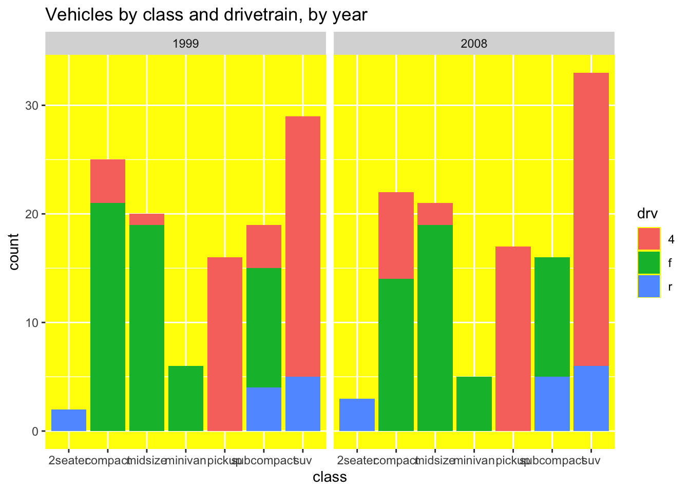
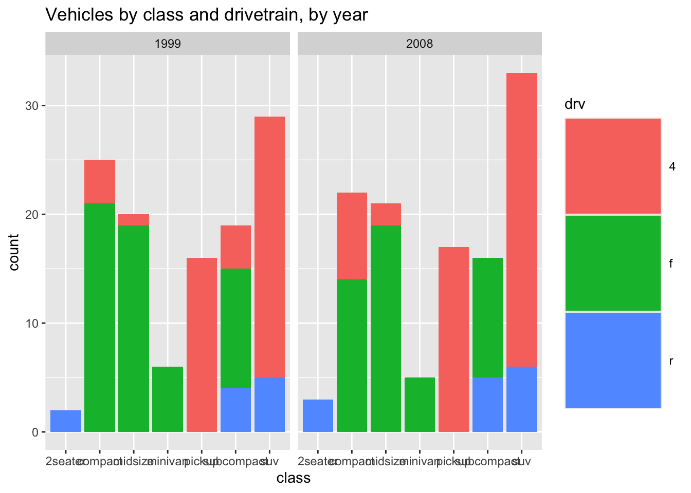
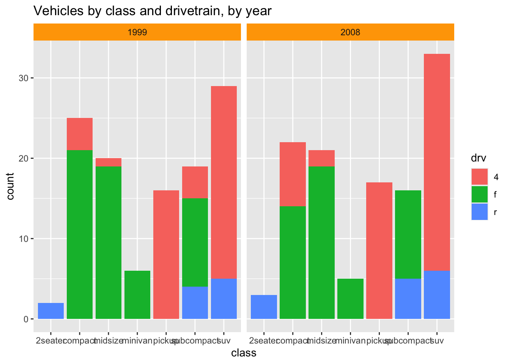
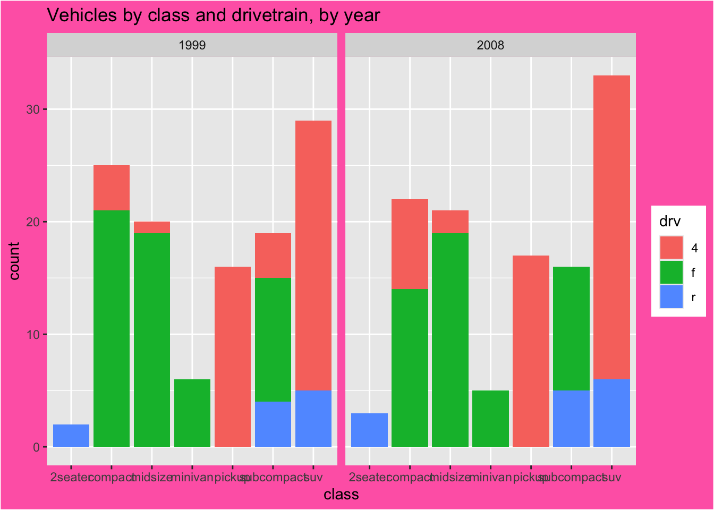
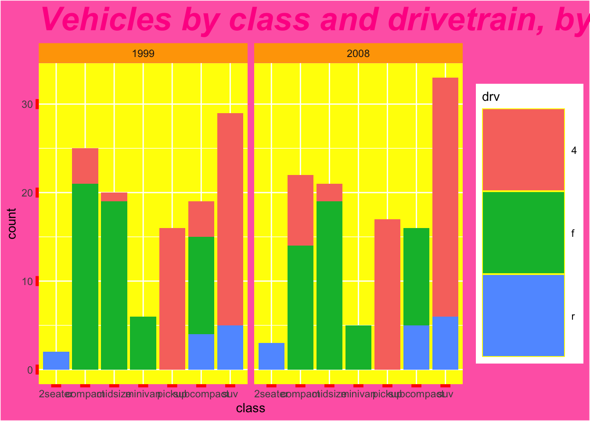

library(tidyverse)5 Theme: what it controls, and the element_ functions
theme() controls every piece of non-data ink on a plot — anything not determined by an aesthetic mapping. It can’t touch scales, coordinates, or geoms; it’s purely visual. Every argument takes one of four element functions.
5.0.1 The areas theme() works on
Text. Every piece of writing on the plot — title, axis labels, legend labels, facet strip labels — can be styled independently, though they all fall back to one shared default if left untouched. e.g. axis.text = element_text(size = 8) shrinks just the tick labels, leaving the title and legend alone.
Axis details. The physical marks that frame an axis — its tick marks and the line running along it — as distinct from the text sitting next to them. e.g. axis.ticks = element_blank() removes the tick marks entirely while the axis text stays put.
Panel. The plotting area itself: its background, border, and the gridlines sitting behind the data — the canvas the geoms are drawn on top of, not the data. e.g. panel.grid.minor = element_blank() drops the finer gridlines, leaving only the major ones for orientation.
Legend. Where the legend sits and how its internal pieces — the coloured swatches, their spacing, their labels — are laid out, entirely separate from what the legend shows (that’s controlled by scale_*()/labs(), not theme()). e.g. legend.position = "bottom" moves the whole legend under the plot instead of to the side.
Facet strips. The small labelled boxes sitting above each facet panel, identifying which subset of the data that panel represents. e.g. strip.background = element_rect(fill = "grey85") gives each strip a shaded backing so it stands out from the panel below it.
Plot-level. The outer canvas the entire plot sits on — background and the breathing room around its edges — outside the panel itself. e.g. plot.margin = margin(10, 10, 10, 10) adds even padding around the whole thing.
A couple of mechanics worth knowing beyond the individual areas: elements inherit down a hierarchy (setting text cascades to axis.text, legend.text, etc. unless a more specific one overrides it), theme_set() changes the default theme for the rest of a session instead of adding + theme_minimal() everywhere, and %+replace% fully replaces an inherited element rather than merging into it — relevant if building a custom theme rather than tweaking a built-in one.
5.0.2 The element_ functions
element_text() — anything rendered as text. Arguments: family (font), face ("plain"/"bold"/"italic"/"bold.italic"), colour, size (points), hjust/vjust (0–1 justification), angle (degrees), lineheight, margin (spacing around the text itself, via margin()).
element_line() — anything drawn as a line: axis lines, tick marks, gridlines. Arguments: colour, linewidth (renamed from size in ggplot2 3.4+), linetype ("solid"/"dashed"/"dotted"/etc.), lineend ("round"/"butt"/"square"), arrow.
element_rect() — anything filled as a rectangle: panel background, plot background, legend background, facet strip background. Arguments: fill, colour (border), linewidth (border thickness), linetype.
element_blank() — draws nothing, and takes no arguments. Removing an element this way also frees the space it would have occupied — the difference from setting colour = "transparent" or fill = NA, which keep the element’s footprint.
5.0.3 Seeing all four at once
One deliberately loud example — not a style to actually use, but each change is exaggerated enough that it can only be attributed to one element function.
ggplot(mpg, aes(x = class)) +
geom_bar(fill = "steelblue") +
labs(title = "Vehicles by class") +
theme(
# element_text() — anything rendered as text
plot.title = element_text(size = 20, face = "bold.italic", colour = "firebrick"),
# element_line() — anything drawn as a line
panel.grid.major = element_line(colour = "darkorange", linewidth = 1.2, linetype = "dashed"),
# element_rect() — anything filled as a rectangle
panel.background = element_rect(fill = "lightyellow", colour = "black", linewidth = 1.5),
# element_blank() — removes the element and its space entirely
axis.ticks = element_blank()
)
The title screams “text,” the dashed orange gridlines are obviously a line element, the yellow bordered panel is obviously a rectangle, and the vanished tick marks — not just invisible, genuinely gone, no reserved space — show what element_blank() does that a transparent colour wouldn’t.
5.0.4 One example per functional area
That plot showed how to change things (which element function). This section shows where — one deliberate change per functional area from the section above, each cranked up loud enough to be unmissable, before combining all six at the end.
base_plot <- ggplot(mpg, aes(x = class, fill = drv)) +
geom_bar() +
facet_wrap(~ year) +
labs(title = "Vehicles by class and drivetrain, by year")
base_plotText. The title, blown up and recoloured well past anything you’d actually ship — impossible to miss, and nothing else on the plot moves.
base_plot +
theme(plot.title = element_text(size = 28, face = "bold.italic", colour = "deeppink"))
Axis details. Tick marks turned into thick red spikes — the axis text next to them is completely untouched, proving this is a separate area from Text.
base_plot +
theme(axis.ticks = element_line(colour = "red", linewidth = 4))
Panel. The plotting area itself painted bright yellow — the canvas the bars sit on, not the bars.
base_plot +
theme(panel.background = element_rect(fill = "yellow"))
Legend. The swatches blown up to nearly the size of the plot itself.
base_plot +
theme(legend.key.size = unit(2.5, "cm"))
Facet strips. The panel-label boxes (“1999”/“2008”) lit up bright orange.
base_plot +
theme(strip.background = element_rect(fill = "orange"))
Plot-level. The entire outer canvas — everything outside the panel — turned hot pink.
base_plot +
theme(plot.background = element_rect(fill = "hotpink"))
5.0.5 Putting it together
All six changes on the one chart at once — deliberately garish, but that’s what makes it unambiguous which area each one belongs to.
base_plot +
theme(
# Text
plot.title = element_text(size = 28, face = "bold.italic", colour = "deeppink"),
# Axis details
axis.ticks = element_line(colour = "red", linewidth = 4),
# Panel
panel.background = element_rect(fill = "yellow"),
# Legend
legend.key.size = unit(2.5, "cm"),
# Facet strips
strip.background = element_rect(fill = "orange"),
# Plot-level
plot.background = element_rect(fill = "hotpink")
)